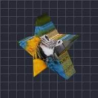

별 프리즘

레이어를 별 모양으로 오려 깊이를 줍니다.
설정
| 설정 | 유형 | 범위 | 기본값 |
|---|---|---|---|
| X 회전 | 각도 | -3600°~3600° | -20° |
| Y 회전 | 각도 | -3600°~3600° | -35° |
| Z 회전 | 각도 | -3600°~3600° | 0° |
| 꼭짓점 | 숫자 | 3~12 | 5 |
| 반경 | 숫자 | 0.02~5 | 0.95 |
| 안쪽 반경 | 숫자 | 0.05~1 | 0.45 |
| 깊이 | 숫자 | 0.01~5 | 0.25 |
| 부드럽게 | 숫자 | 0~1 | 0.15 |
| 위치 | 점 (X, Y) | -5000 px~5000 px | 0 px, 0 px |
| 크기 | 숫자 | 0.05~10 | 1 |
| 원근 | 숫자 | 0~1 | 0.5 |
| 셰이딩 | 숫자 | 0~1 | 0.6 |
| 조명 각도 | 각도 | -3600°~3600° | 135° |
| 광택 | 숫자 | 0~1 | 0.3 |
| 조명 | 선택지 | 클래식, 부드러움, 직접광 | 클래식 |
| 주변광 | 숫자 | 0~2 | 0.03 |
| 조명 높이 | 숫자 | 0~20 | 3 |
| 조명 색상 | 색상 | – | #FFFFFF |
| 하이라이트 선명도 | 숫자 | 1~200 | 15 |
| 텍스처 | 선택지 | 맞춤, 타일, 늘이기 | 맞춤 |
| X 반복 | 숫자 | 0.01~100 | 1 |
| Y 반복 | 숫자 | 0.01~100 | 1 |
| 미러 | 켜짐 또는 꺼짐 | – | 꺼짐 |
| 텍스처 각도 | 각도 | -3600°~3600° | 0° |
| 텍스처 오프셋 | 점 (X, Y) | -100~100 | 0, 0 |
| 텍스처 자르기 | 숫자 | 0.05~10 | 1 |
| 텍스처 기준점 | 선택지 | 중심, 모서리 | 중심 |
| 스타일 | 선택지 | 평평하게, 뾰족하게 | 평평하게 |
| 스타일 | 선택지 | 클래식, 표준 | 클래식 |